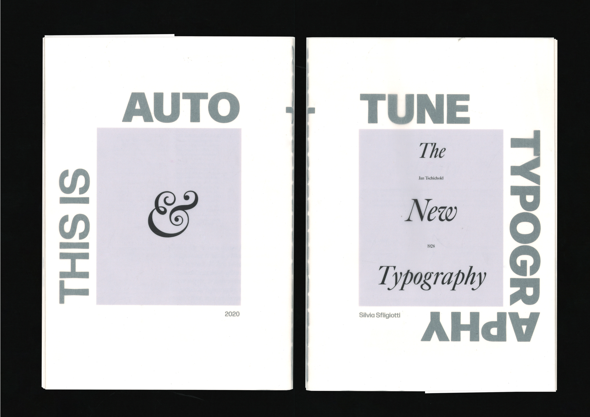

A TYPOGRAPHIC CONVERSATION — ARTIST BOOK
Publication design & bookbinding workshop. Limited edition zine with folded spreads, black & white riso + metallic foil accents. Edition of 50.

THE SOCIAL STUDIO — REBRANDING

SISYPHUS — MYRIORAMA
Collage, Graphic Art, Conceptual Design
“Sisyphus” is a black-and-white digital collage series that reimagines the myth of Sisyphus in modern corporate culture, presented as a double-sided A6 accordion booklet. work by exploring circularity in the urban environment rather than in nature.
Featured in the showcase "Assembled Archives" at the Buxton Contemporary, part of Melbourne Design Week 2025.

From Print to Digital — Data Manifestation
Publication design & bookbinding workshop. Limited edition zine with folded spreads, black & white riso + metallic foil accents. Edition of 50.

CAMP MAGAZINE — VOLUME 6
Editorial design & illustration. A nomadic print experiment about subculture, diy archives and radical play. Features risograph inserts and hand-bound spine.

RiceUP — Sustainable Packaging
Interactive browser-based archive documenting field recordings from the red river delta. Custom cursor, lo-fi UI, and community contributions. (unpublished beta)